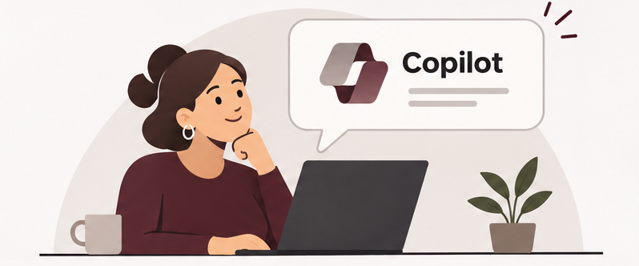

WELCOME TO COPILOT FIRST STEPS
Everyday work,
made easier with Copilot
Explore practical use cases, clear examples, and prompts you can try at work. No quizzes.

Try it
Hands-on practice.
Ask it
Everyday language.
Use it
Get real work done.